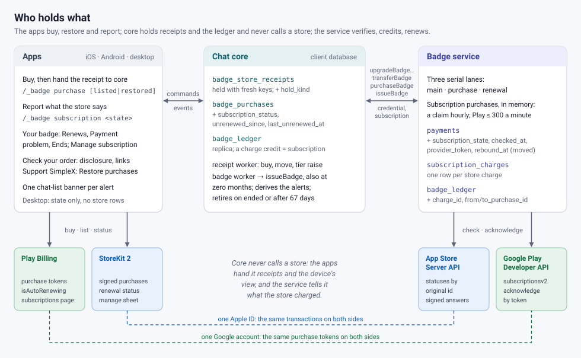
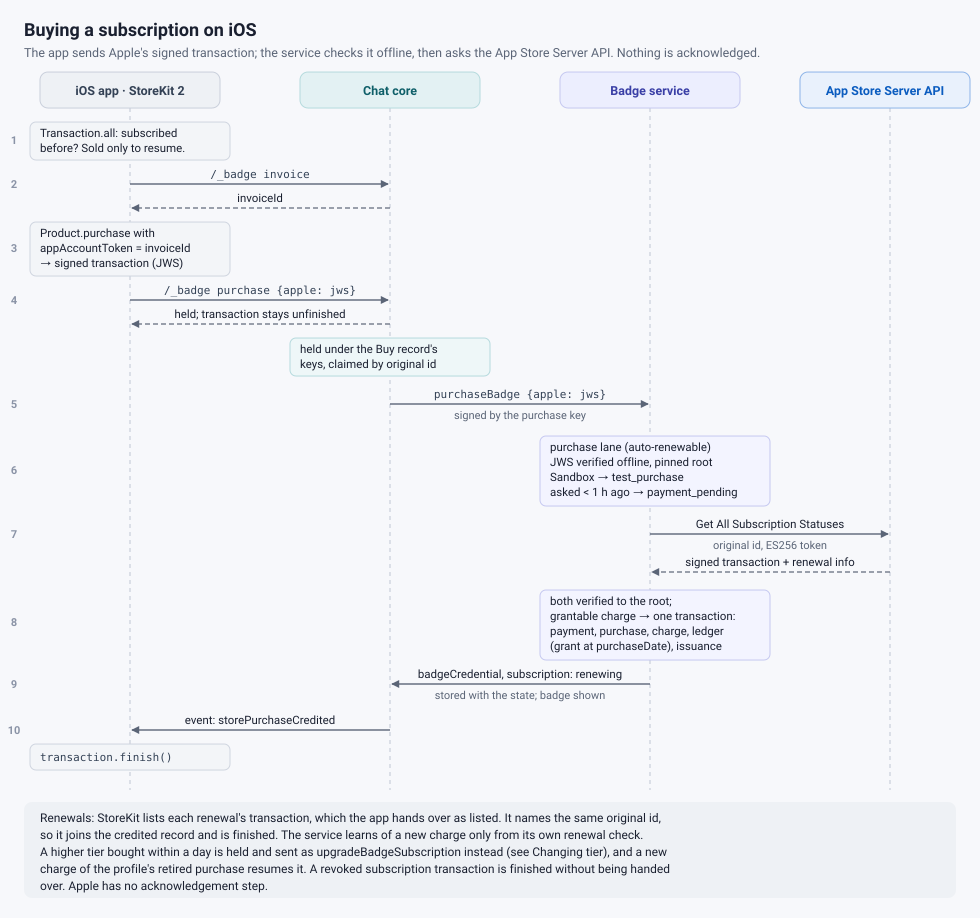
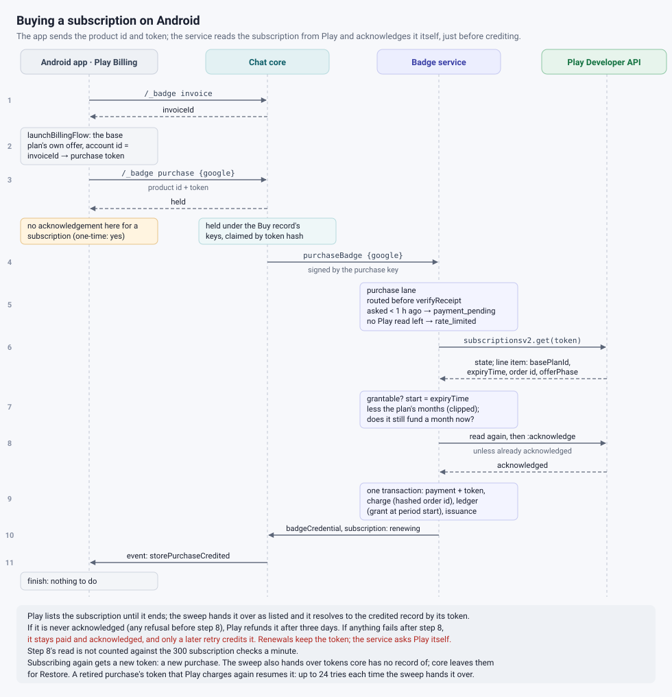
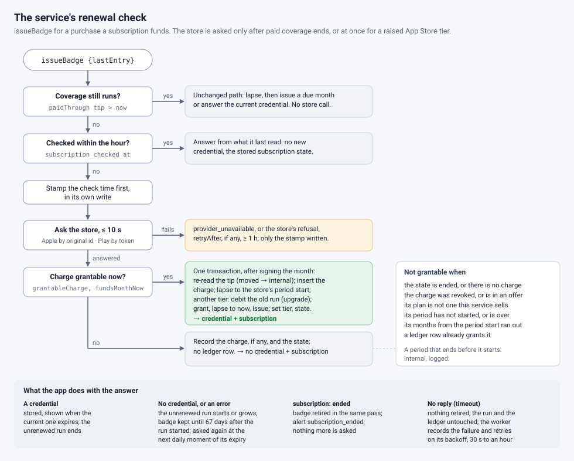
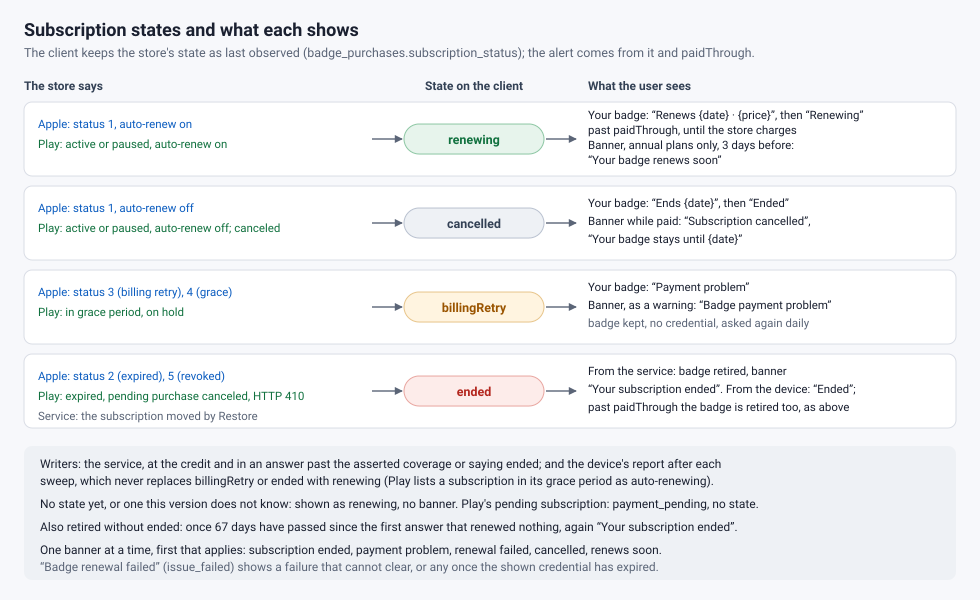
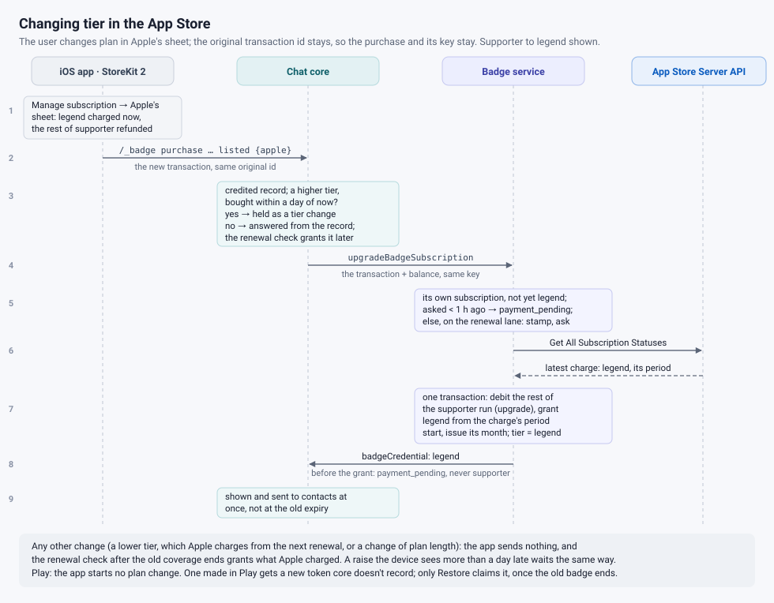
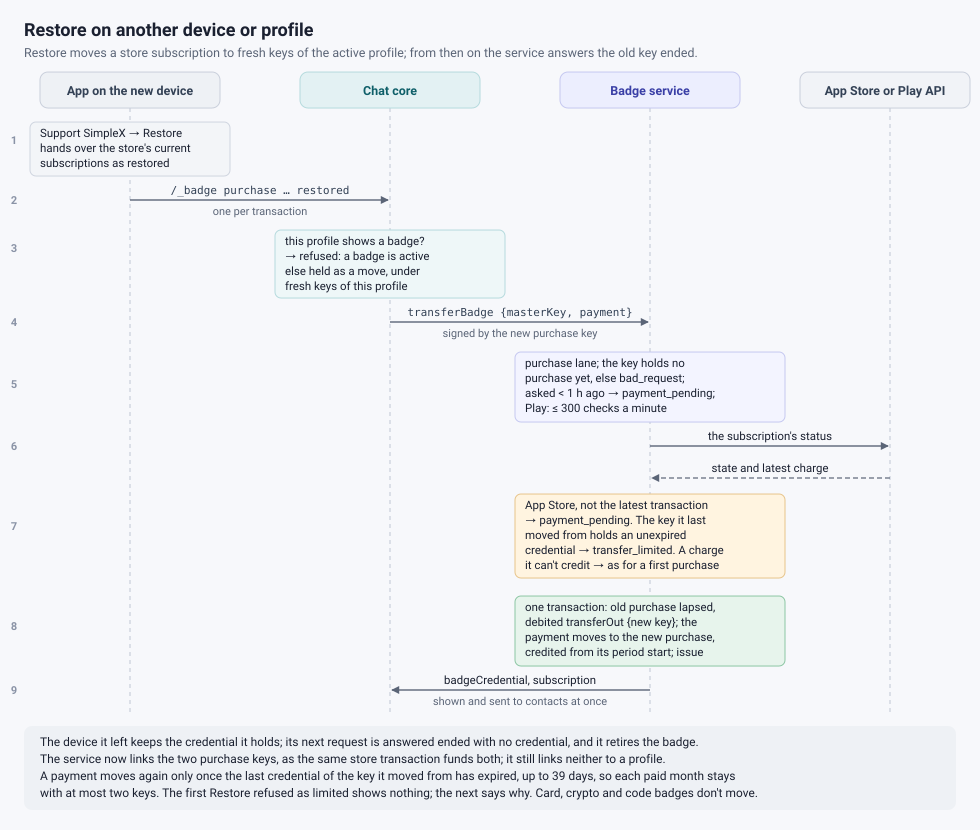
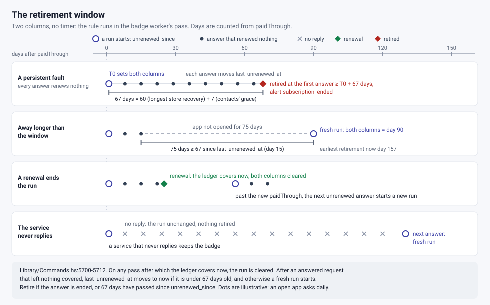
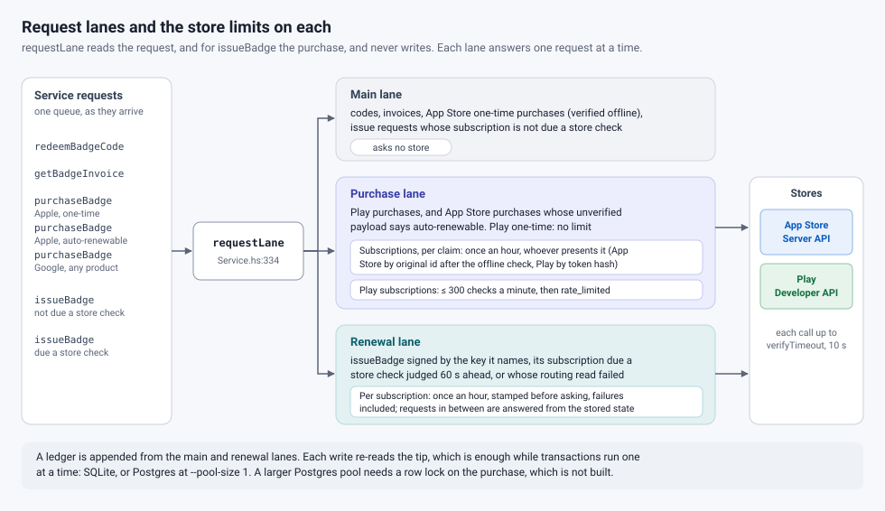

PR #7716
Supporter badges (supporter and legend tiers) were prepaid: a code bought on the web, or a one-month store purchase not yet offered. This PR sells them as App Store and Google Play subscriptions, monthly or annual, across the badge service, core and apps.

The app passes the store's receipt, through core, to the badge service, which checks it with the store and credits the badge.


Once the paid months run out, the app requests the next badge credential at the weekly moment all apps share, then daily, and only then does the service ask the store whether it charged again, at most hourly per subscription. A charge counts from its billing-period start, and grants the tier of the plan the store charged. The app also reports the device's view of the store, such as auto-renewal off, for the Your badge screen and chat-list banners.


The app never starts a change. On iOS the user changes plan in Apple's subscription sheet; all four subscriptions share one subscription group, so the original transaction id, the purchase and its key stay.

Restore purchases (Support SimpleX screen) hands the store's current subscriptions to core, which asks the service to move each to fresh keys of the active profile, unless that profile already shows a badge. The service asks the store, ends the old purchase, which it answers "ended" from then on, and credits the new key with the current charge; the new badge shows at once. The device it left keeps the badge it holds until that credential is due for renewal, then retires it.
A store receipt is no secret: whoever holds it can move the badge to their own keys. So a subscription moves again only once the badge already issued to the key it left has expired, up to 39 days, which keeps each paid month with at most two keys; an App Store receipt moves it only while it is the subscription's latest transaction, a Play token for the subscription's life. The service now links the two purchase keys, as the same store transaction funds both, but still not either to a profile. Badges bought by card, crypto or code don't move.

While the store retries a failed payment, the badge stays (on iOS, until the device reports it expired), though contacts see it as expired a week after its last credential expires, and the profile can't buy or redeem another. It is removed as soon as the service answers that the subscription ended; once the paid months have run out, when Apple's store on the device reports it expired; or after 67 days of answers that renewed nothing: 60 days, the longest either store retries, plus 7 days of contacts' grace. If the service never replies and the device reports nothing, the badge stays.

Purchases and Restores that ask a store, renewal checks and tier changes, and everything else run on separate queues, so fake purchases can delay only other purchases and Restores. Each subscription is checked at most hourly, and the purchase path makes at most 300 Play subscription checks a minute in total; a Play purchase turned away for three days is refunded.

charge ledger entry; upgradeBadgeSubscription for a raised App Store tier and transferBadge for Restore, with a transfer_limited error.listed and restored receipt flags, a refusal while a store receipt may still be credited, and the subscription and its alerts in the badge state.Not built: iOS resubscription on another device or profile or to another badge, Restore for badges bought by card or crypto, refunds (a refunded annual keeps its badge), and spreading the weekly moment.
Store setup: App Store: one subscription group with legend at a higher level than supporter, as only supporter to legend is treated as a raise; Billing Grace Period and Family Sharing off (once on, Family Sharing can't be undone). Play: minimum grace period, account hold on, pausing off. Both: no offers of any kind, server API credentials, enough quota, translations, store review (Sandbox purchases are refused as test purchases, an open question), and products hidden until these apps ship.